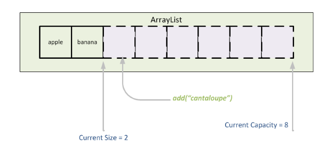

<!DOCTYPE html>
<html lang="en">

<head>
    <meta charset="UTF-8">
    <meta name="viewport" content="width=device-width, initial-scale=1.0">
    <title>Brian Zhang's ICS 4U Website</title>
    <link rel="stylesheet" href="style.css">
    <style>
        body {
            background-image: url('images/background.jpg');
            background-attachment: fixed;
            background-size: cover;
        }
    </style>
</head>

<body>
    <header id="navbar">
        <div class = "logo">
            <a href = "index.html">Brian Zhang</a>
        </div>
        <ul>
            <li><a href="index.html">Home</a></li>
            <li>
                <div class="dropdown">
                    <button class="dropbtn">Tutorials</button>
                    <div class="dropdown-content">
                        <a href="oop.html">OOP</a>
                        <a href="arrays.html">Arrays</a>
                        <a href="arraylists.html">ArrayLists</a>
                        <a href="searchsort.html">Search & Sort</a>
                        <a href="recursion.html">Recursion</a>
                    </div>
                </div>
            </li>
            <li><a href="references.html">References</a></li>
            <li><a href = "competitiveProgramming.html">Competitive Programming</a></li>
            <li><a href="aboutme.html">About me</a></li>
        </ul>
    </header>
    <div class = "content">
        <div class = "title">ArrayLists</div>
        <div class = "box">
            <div id = "full">
                <p>Imagine that you have a TO-DO list. The tasks are listed in no particular order, but you want to remove the tasks when you're done with them, to avoid confusion. Accomplishing this with arrays is difficult, as to remove the element from the array, you would need to create a new array with slightly smaller size and remove the item. This is a problem that ArrayLists solves, allowing the user to create dynamic lists. </p>
                <h1>General Information</h1>
                <p>ArrayLists are under the java.util package, as a subclass of the Collections class. It can be created containing any object, but not primitive data types. This means that for ints, doubles, etc, you would need to use their respective wrapper classes. </p>
                <p>ArrayLists don't keep growing 1 element at a time. Instead, when their maximum capacity is reached, the new ArrayList is created, and the items in the original ArrayList are copied over. </p>
                <p>These two reasons are why ArrayLists are considered a lot more memory intensive - they require an object instead of primitive data types, and the capacity of ArrayLists is often much larger than the number of elements in it. </p>
                <div id = "fullCentered">
                    
                </div>
                <h1>Declaration and Initialization</h1>
                <p>To declare an ArrayList, you are to put the data type of what is to be stored in between the less than and greater signs. If it is left blank on initialization, then we are to assume it is the same type as the declaration. Below is a sample of the declaration and initialization of ArrayLists. </p>
                <div class = "code">
                    <pre>
ArrayList&lt;dataType&gt; arr1;
arr1 = new ArrayList<>();
ArrayList&lt;dataType&gt; arr2;
arr2 = new ArrayList&lt;dataType&gt;();</pre>
                </div>
                <h1>Accessing</h1>
                <p>To access an element in an ArrayList, the .get() method is invoked to access it, taking in the index as the parameter. Additional methods include .add() and .remove(), which do what their respective names imply. The add() method could take 1 or 2 parameters, the optional one indicating the index to be inserted. The remove() method can take an object or an index as a parameter. If it is an index, then that index is removed. If it were an object, then the first appearance of that object is removed. The set() method takes in 2 parameters, the first is the index to set, and the second is the object to set it to. Finally, there is a size() method that returns the length of the ArrayList. Below are examples of the use of these methods. </p>
                <div class = "code">
                    <pre>
ArrayList&lt;String&gt; arr = new ArrayList<>; //arr = {}
arr.add("a"); // arr = {"a"}
arr.add("b"); // arr = {"a", "b"}
arr.add(1, "c"); // arr = {"a", "c", "b"}
arr.add("d"); // arr = {"a", "c", "b", "d"}
arr.set(3, "c"); // arr = {"a", "c", "b", "c"}
arr.remove("c"); // arr = {"a", "b", "c"}
arr.remove(1); // arr = {"a", "c"}
System.out.println(arr.size()); // Outputs 2</pre>
                </div>
                <h1>For Each Loops</h1>
                <p>Currently, we only know one way to iterate through arrays and ArrayLists - having an iterator variable look from index 0 to the size/length of the array/ArrayList, then getting each element individually. However, this is a tedious process - what if we don't want the index, and only care about the value? This is where for each loops comes in. They allow you to iterate through an array, storing the value of the current element as the iterator. Below is an example of the use of a for each loop to add up all the elements of an ArrayList. </p>
                <div class = "code">
                    <pre>
//Declaration and Initialization
ArrayList&lt;Integer&gt; arr = new ArrayList&lt;&gt;();
for(int i = 0;i < 10;i++){
    arr.add(i*4+7);
}

int sum = 0;
for(int x: arr){
    sum += x;
}

System.out.println(sum); //Outputting the sum</pre>
                </div>
            <h1>Autoboxing/Autounboxing</h1>
            <p>In the previous code segment, you may have noticed that instead of creating a new Integer object, only a primitive int is added. Java automatically converts our int to an Integer, and sometimes an Integer to an int, for convenience. This process from primitive data type to object is called autoboxing, the reverse is called autounboxing. </p>
            <h1>Common Mistakes</h1>
            <p>When using ArrayLists, it is important to realize that they're different entities from arrays, as in, the way we access and replace elements. Since ArrayLists are data types, we use the dot notation to perform any method. Additionally, similar to arrays, it is important to be aware of the size of the ArrayList, as an IndexOutOfBoundsException can be thrown if an invalid index is entered. </p>
            <h1>Example</h1>
            <p>The assignment for this project was to simulate a game of bridge with Java, using ArrayLists. Below is our custom helper method intended to sort a player's hand. The ArrayList was used to deal cards to the player's hand one by one so that the ArrayList doesn't contain any null elements. </p>
            <div class = "code">
                <pre>
private ArrayList<String> sort(ArrayList<String> arr, HashMap<Character, Integer> cards){
    for(int i = arr.size()-1;i >= 0;i--){
        for(int j = 0;j < i;j++){
            if(cards.get(arr.get(j).charAt(0)) < cards.get(arr.get(j+1).charAt(0))){
                String temp = arr.get(j);
                arr.set(j,arr.get(j+1));
                arr.set(j+1,temp);
            }
        }
    }
    return arr;
}</pre>
            </div>
            </div>
        </div>
    </div>
    <footer>
        <div class="website">ICS 4U Website</div>
        <div class="signature">Created by Brian Zhang</div>
    </footer>
</body>
<script>
    document.addEventListener('scroll', () => {
        const header = document.getElementById('navbar');
        if(window.scrollY > 0){
            header.classList.add('darken');
        }else{
            header.classList.remove('darken');
        }
    })
</script>


</html>